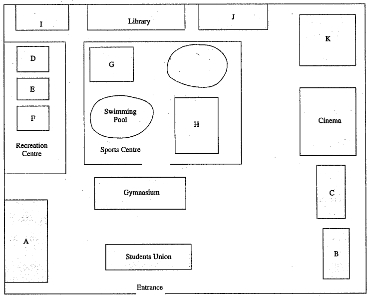

Survival English – Exercise 8
University Campus · Map labelling · 5 questions
Student information
Audio
Look at the map of the university campus. You will hear 5 sets of directions to a certain place. As you listen, follow the directions carefully, then write the letters next to the names of the places below.

Conversation 1
(Susan is a new student. She goes to the university to register.)
(Susan là sinh viên mới. Cô ấy đến trường đại học để đăng ký nhập học.)
A: Excuse me. Can you help me? I’m looking for the Registration Office.
A: Xin lỗi. Bạn có thể giúp tôi không? Tôi đang tìm Văn phòng Đăng ký.
B: Maybe I can. I think it’s in the Administration Building. Are you a new student?
B: Có thể tôi giúp được. Tôi nghĩ văn phòng ở Tòa nhà Hành chính. Bạn là sinh viên mới à?
A: Yes, I am.
A: Vâng, đúng vậy.
B: Well, look, here is the map of the campus. We’re at the entrance now. The building we face is the Students Union, the building on our left is the Administration Building. (Question 1)
B: Đây là bản đồ khuôn viên trường. Bây giờ chúng ta đang ở lối vào. Tòa nhà đối diện là Hội Sinh viên, tòa nhà bên trái chúng ta là Tòa nhà Hành chính. (Câu 1)
A: Thank you.
A: Cảm ơn bạn.
B: With pleasure.
B: Rất sẵn lòng.
Conversation 2
(Susan comes out of the Administration Building and wants to buy some course books.)
(Susan rời Tòa nhà Hành chính và muốn mua một số sách học.)
A: Excuse me. I’m a new student here. I’m looking for the bookstore. Do you know where it is?
A: Xin lỗi. Tôi là sinh viên mới ở đây. Tôi đang tìm hiệu sách. Bạn biết nó ở đâu không?
B: The bookstore? Let me see. We are at the Administration Building. Do you see Gymnasium there, the one facing us on the left?
B: Hiệu sách à? Để tôi xem. Chúng ta đang ở Tòa nhà Hành chính. Bạn có thấy nhà thể dục trước mặt, ở phía bên trái không?
A: Yes, is the tall white building over there?
A: Có, đó là tòa nhà cao màu trắng đằng kia phải không?
B: Right. The bookstore is behind the gymnasium, between the cinema and the bank. (Question 2)
B: Đúng rồi. Hiệu sách nằm phía sau nhà thể dục, giữa rạp chiếu phim và ngân hàng. (Câu 2)
A: I see. Thank you very much.
A: Tôi hiểu rồi. Cảm ơn bạn rất nhiều.
B: You are welcome.
B: Không có gì.
Conversation 3
(Susan comes out of the bookstore and she plans to go to the tennis club.)
(Susan rời hiệu sách và dự định đến câu lạc bộ quần vợt.)
A: Excuse me, could you tell me where the tennis club is?
A: Xin lỗi, bạn có thể cho tôi biết câu lạc bộ quần vợt ở đâu không?
B: Tennis Club? … er … I think it is in the Sports Centre. When you go to the sports centre, you will find a swimming pool. The tennis club is opposite it, next to the playground. You can’t miss it. (Question 3)
B: Câu lạc bộ quần vợt à? Ừm… tôi nghĩ nó ở Trung tâm Thể thao. Khi đến trung tâm thể thao, bạn sẽ thấy một hồ bơi. Câu lạc bộ quần vợt nằm đối diện hồ bơi, bên cạnh sân chơi. Bạn sẽ dễ dàng tìm thấy. (Câu 3)
A: Thanks a lot.
A: Cảm ơn bạn nhiều.
Conversation 4
A: Excuse me, I’m looking for the computer centre. Could you tell me where it is?
A: Xin lỗi, tôi đang tìm Trung tâm Máy tính. Bạn có thể cho tôi biết nó ở đâu không?
B: The Computer Centre? Yes, it’s next to the library, opposite the recreation centre. (Question 4)
B: Trung tâm Máy tính à? Vâng, nó nằm bên cạnh thư viện, đối diện trung tâm giải trí. (Câu 4)
A: Next to the library, opposite the recreation centre.
A: Bên cạnh thư viện, đối diện trung tâm giải trí.
B: Yes, that’s right.
B: Đúng vậy.
A: Thank you very much.
A: Cảm ơn bạn rất nhiều.
Conversation 5
A: Excuse me, could you tell me where the cafeteria is?
A: Xin lỗi, bạn có thể cho tôi biết quán ăn tự phục vụ ở đâu không?
B: Oh, cafeteria? I think there is one in the recreation centre.
B: À, quán ăn à? Tôi nghĩ có một quán trong trung tâm giải trí.
A: Recreation centre?
A: Trung tâm giải trí à?
B: Yes, when you come to the recreation centre, you will see three buildings there. The middle one has a cafeteria. You can see a big signpost there. You can’t miss it. (Question 5)
B: Vâng, khi đến trung tâm giải trí, bạn sẽ thấy ba tòa nhà ở đó. Tòa nhà ở giữa có quán ăn. Có một biển chỉ dẫn lớn tại đó. Bạn sẽ dễ dàng tìm thấy. (Câu 5)
A: Thank you very much.
A: Cảm ơn bạn rất nhiều.